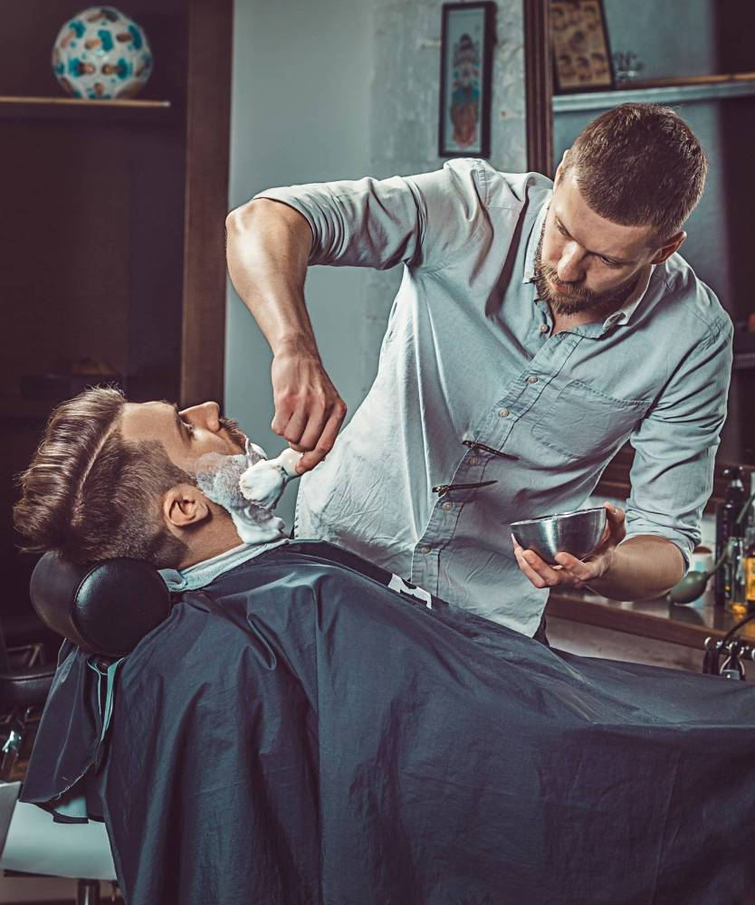

FORMATION
Réaliser des techniques de rasage et de taille de barbe
Objectif de la formation La formation Réaliser des techniques de rasage et de taille de barbe, en cours de dépôt au Répertoire Spécifique et en attente de décision de France Compétences, a pour objectif de permettre aux titulaires de réaliser : un traçage de barbe une taille de différentes formes de barbe par rapport à la morphologie du client un rasage traditionnel complet Cette formation est complémentaire du savoir-faire des coiffeurs. Elle vient enrichir leurs compétences professionnelles.
Contenu de la formation
- Préparation et adaptation du poste de travail
- Installation et confort client
- Respect des règles d’hygiène et de sécurité relatives au métier
- Observation de la morphologie du visage et de la peau
- Réalisation d’un rasage traditionnel au coupe-choux
- Réalisation d’une taille, d’une création de barbe ou de moustache
- Traçage des contours afin de définir la structure de la barber
Accès & Prérequis La formation Réaliser des techniques de rasage et de taille de barbe s'adresse aux professionnels de la coiffure souhaitant acquérir des compétences complémentaires dans les techniques de rasage et de la taille de la barbe. Pour accéder à cette formation, le candidat doit être titulaire au minimum d’une certification ou d'un diplôme de niveau 3 dans le domaine de la coiffure type CAP Métiers de la Coiffure.
Poursuite d'études et débouchés Le titulaire de la formation Réaliser des techniques de rasage et de taille de barbe, exerce ses fonctions dans les types de structures suivantes :
- Barber shop, salon de coiffure mixte indépendant ou franchisé
- Coiffeur/se à domicile

TAUX DE RÉUSSITE

TAUX DE RÉUSSITE
TAUX DE RÉUSSITE
TAUX DE RÉUSSITE
TAUX DE RÉUSSITE